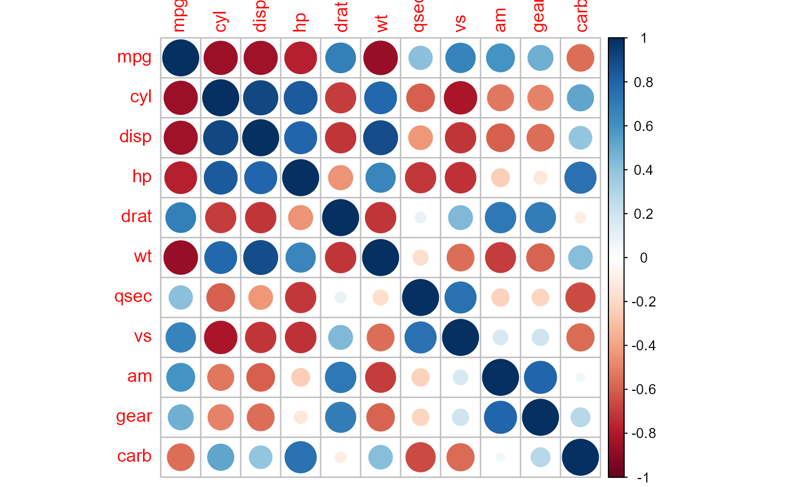
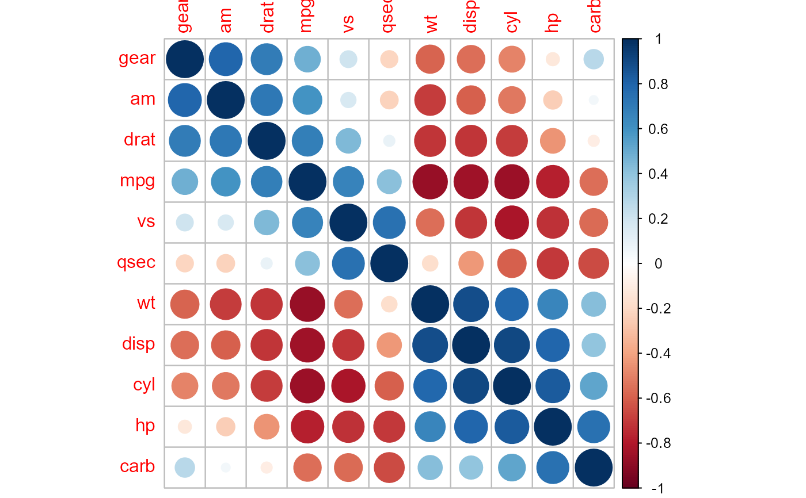
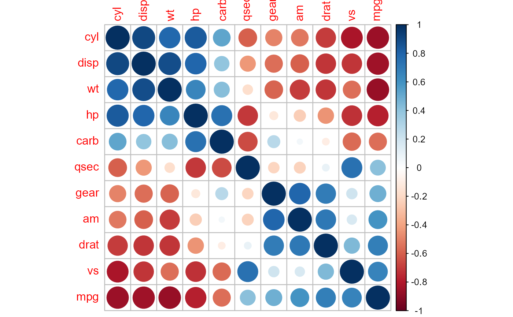
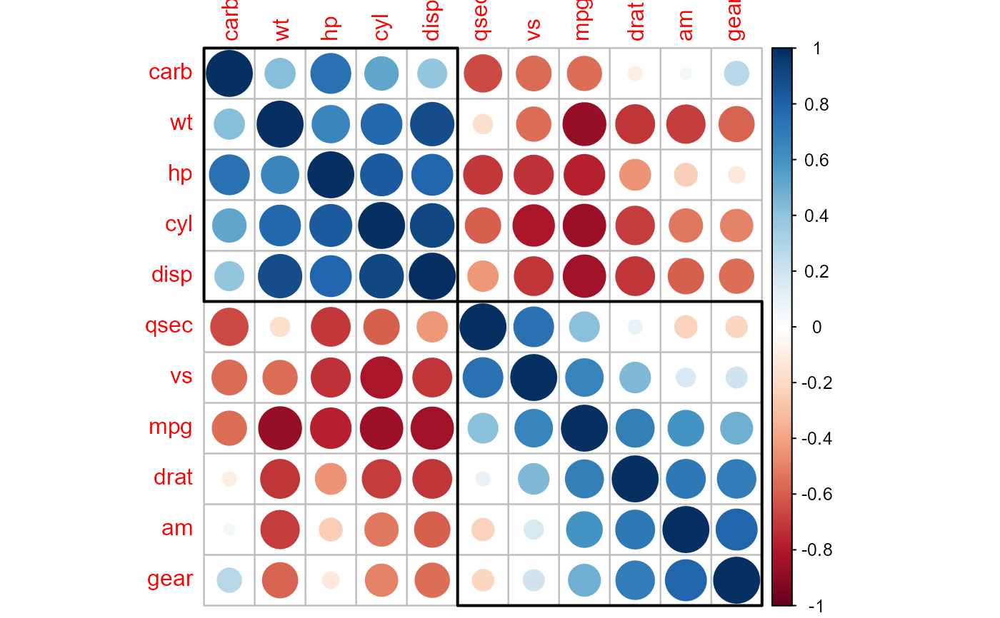
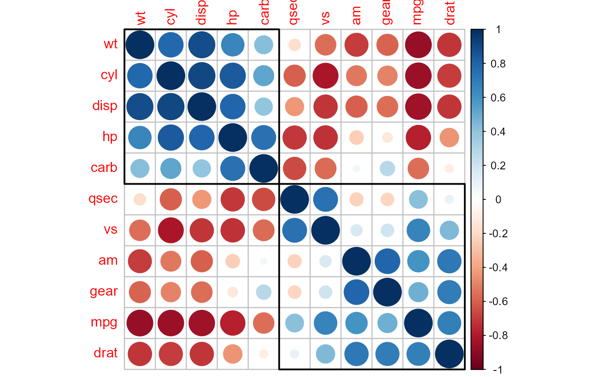

Draw rectangle(s) around the chart of corrrlation matrix based on the number of each cluster's members.
Arguments
- corr
Correlation matrix to reorder.
- order
Character, the ordering method for the correlation matrix.
'AOE'for the angular order of the eigenvectors. It is calculated from the order of the angles, \(a_i\): $$ a_i = arctan (e_{i2} / e_{i1}), if e_{i1} > 0$$ $$ a_i = arctan (e_{i2} / e_{i1}) + \pi, otherwise.$$ where \(e_1\) and \(e_2\) are the largest two eigenvalues of matrixcorr. See Michael Friendly (2002) for details.'FPC'for the first principal component order.'hclust'for hierarchical clustering order.'alphabet'for alphabetical order.
- hclust.method
Character, the agglomeration method to be used when
orderishclust. This should be one of'ward','ward.D','ward.D2','single','complete','average','mcquitty','median'or'centroid'.
See also
Package seriation offers more methods to reorder matrices,
such as ARSA, BBURCG, BBWRCG, MDS, TSP, Chen and so forth.
Examples
M = cor(mtcars)
(order.AOE = corrMatOrder(M, order = 'AOE'))
#> [1] 10 9 5 1 8 7 6 3 2 4 11
(order.FPC = corrMatOrder(M, order = 'FPC'))
#> [1] 2 3 6 4 11 7 10 9 5 8 1
(order.hc = corrMatOrder(M, order = 'hclust'))
#> [1] 11 6 4 2 3 7 8 1 5 9 10
(order.hc2 = corrMatOrder(M, order = 'hclust', hclust.method = 'ward.D'))
#> [1] 6 2 3 4 11 7 8 9 10 1 5
M.AOE = M[order.AOE, order.AOE]
M.FPC = M[order.FPC, order.FPC]
M.hc = M[order.hc, order.hc]
M.hc2 = M[order.hc2, order.hc2]
par(ask = TRUE)
corrplot(M)

corrplot(M.AOE)

corrplot(M.FPC)

corrplot(M.hc)
corrplot(M.hc)
corrRect.hclust(corr = M.hc, k = 2)

corrplot(M.hc)
corrRect.hclust(corr = M.hc, k = 3)
corrplot(M.hc2)
corrRect.hclust(M.hc2, k = 2, method = 'ward.D')
